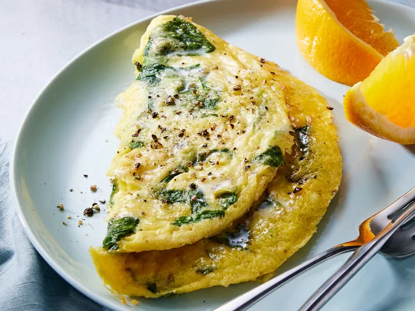

Lasagna good Lasagna

- Eggs
- Onion and garlic
- Baby Spinach
- Salt
- Spices and seasonings
- Beat eggs in a bowl, and stir in baby spinach and Parmesan cheese.
- Season with onion powder, nutmeg, salt, and pepper.
- Spray a small skillet with cooking spray and place over medium heat. Once warm, add in the egg mixture and cook until partially set, about 3 minutes.
- Flip with a spatula, and continue cooking, 2 to 3 minutes.
- Reduce heat to low and continue cooking, 2 to 3 minutes, or until omelet reaches desired doneness. Serve warm and enjoy!